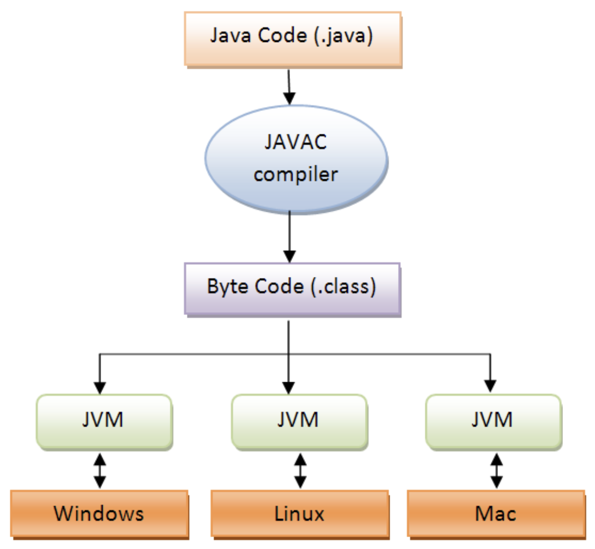
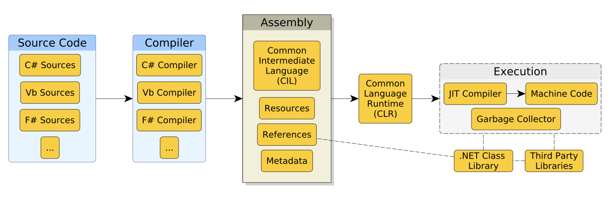
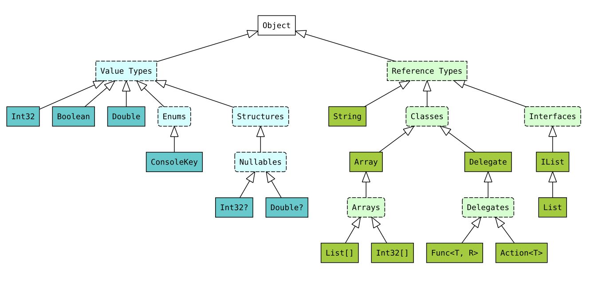
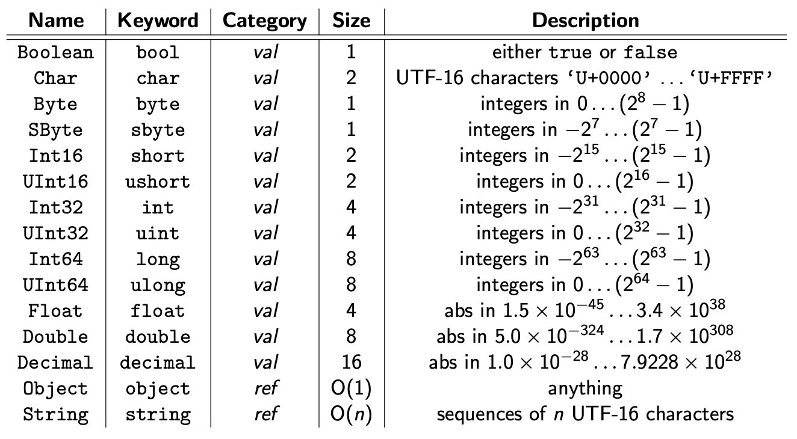
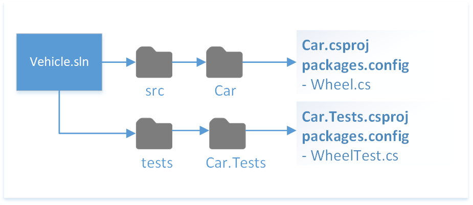

.NET e la programmazione orientata agli oggetti.
A cura di Nicholas Magi — nicholas.magi[at]ispascalcomandini.it
Anders Heijlsberg, Ingegnere software danese

Write once, run anywhere.
Architettura della JVM
Codice Java (viene compilato in)$\rightarrow$ Bytecode (viene eseguito da)$\rightarrow$ JVM
Stessa filosofia, per più linguaggi.

Architettura del CLR
Codice C# (viene compilato in)$\rightarrow$ CIL (viene eseguito da)$\rightarrow$ CLR
Le implementazioni sono allineate e unificate a .NET.
$\downarrow$
Attenzione alla syntactic sugar!

(la mappa non è esaustiva!)
Da https://learn.microsoft.com/en-us/dotnet/csharp/language-reference/builtin-types/built-in-types
.sln.csproj<Project Sdk="Microsoft.NET.Sdk">
<PropertyGroup>
<TargetFramework>net7.0</TargetFramework>
<OutputType>Library</OutputType>
<Nullable>enable</Nullable>
<ImplicitUsings>enable</ImplicitUsings>
</PropertyGroup>
<ItemGroup>
<PackageReference Include="Newtonsoft.Json" Version="13.0.3" />
</ItemGroup>
<ItemGroup>
<ProjectReference Include="..\MyProject.Core\MyProject.Core.csproj" />
</ItemGroup>
</Project>
Esempio del contenuto di un file progetto (.csproj)

Esempio su GitHub: https://github.com/dotnet/samples/tree/main/framework/libraries/migrate-library-csproj
src/ inseriamo il codice sorgente della nostra applicazione (possono essere previsti più progetti sotto src/)tests/ specchia la stessa gerarchia dei file e delle cartelle di src/pippo, pluto, f(x)…PascalCase per nomi di classi, metodi, proprietà, interfacce, namespacecamelCase per le variabiliUPPER_CASE_SNAKE_CASE per le costanti(prima degli anni ‘50)
(anni ‘50 - ‘60)
(anni ‘70 - ‘80)
(anni ‘90 - ‘2000)
Col tempo ci si è accorti che, con la crescente potenza computazionale dei calcolatori e la crescente potenzialità dei problemi risolvibili da essi, si doveva avere la possibilità di codificare la soluzione di un dato problema in un linguaggio che “trascurasse” i dettagli di basso livello della macchina che la eseguiva.
Modellazione delle entità che costituiscono un dominio applicativo, e delle varie relazioni tra di loro - minimizzando la gestione di aspetti non inerenti alla risoluzione del problema.
Necessità di ASTRAZIONE!
#01. Everything is an object. Un oggetto è una entità che fornisce operazioni per essere manipolata.
#02. Un programma è un set di oggetti che si comunicano cosa fare scambiandosi messaggi. Questi messaggi sono richieste per eseguire le operazioni fornite.
#03. Un oggetto ha una memoria fatta di altri oggetti. Un oggetto è ottenuto impacchettando altri oggetti.
#04. Ogni oggetto è istanza di una classe. Una classe descrive il comportamento dei suoi oggetti.
#05. Tutti gli oggetti di una classe possono ricevere gli stessi messaggi. La classe indica tra le altre cose quali operazioni sono fornite, quindi per comunicare con un oggetto basta sapere qual è la sua classe.
E01: Circle, Square, Triangle E02: Studente, Professore, Classe
// TBC…